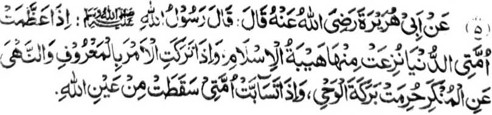
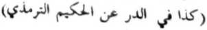
Miyaka thitayan ko Abu Hurairah (Radhiallaho Anho) a pitharo iyan a miyatharo o Rasulollah (Sallallaho Alaihi Wasallam), “Anda den-i makala so donya ko manga Ummat aken na mada kiran so kala-i kipantag so Islam; na anda den-i igenek iran so kasogo sa mapiya go so kasapar sa marata na mapapas kiran so baraka o Wahi (ma-ana so Qur'an); na anda, den-i mbobono siran na makadapanas siran sa pangilay-layan o Allah." [ Tirmizi]
So manga pipiya-i pamikiran pantag ko Ummat na pamimikirana iran ino aya ini-onga o manga galebek iran [a imbolong ko pagetao] na kadarodos, kena ba kapaka-ozor. Opama ka sekano na paparatiyaya-an niyo so Nabi niyo go [paparatiyaya-an niyo] so manga ‘enda-o niyan na palaya den benar ago phakabegay sa ‘enda-o, na anda sabap-i kiyatarima-a niyo sa phaka-ompiya so pitharo iyan a phaka-kaid. Pitharo iyan a giyangka-iya a manga nganin na iphagomareg o sakit iyo, na aya kiyapikira niyo ron na aya rekano phakabolong. So Nabi (Sallallaho ‘ Alaihi Wasallam) na miyatharo iyan:
“Di den matarotop so kababaloy a Muslim o isa rekano, taman sa so manga baya a ginawa niyan na di makaphasiyonot ko Agama a minitalingoma ko.”
Siyorang iyo wa-i sa aya kiyapikira niyo ron na so Agama na pangalang ko kaphagozor o tao [ko okit a kapaginetao] ago so kaphaginged ko kimbabala-an niyan ko manga ped a inged. Pitharo o Allah sa Qur’an:
“Sa tao a kabaya iyan so balas ko Akhirat, na pagomanan Nami ron so balas rekaniyan; na sa tao a kabaya iyan so balas sa donya, na mbegan Nami ron, na da a bagi-an niyan ko Akhirat a kipantag.” [Surah Ash-Shoorah:20]
Aden a Hadith a lagida-i sa ma-an a a pitharo iyan:
“So poso o Muslim a aya antap iyan na so Alongan a Maori na di niyan mapezagipa so manga kalbihan o donya, ogaid na pekhatago so donya ko kadadapo-an o manga a-i niyan. So peman so siran a gi-i ran zaloba-an so donya, na pekhikolobon so manga ringasa ago tiyoba, ogaid na di niyan bo khaiawanan so isesenggay a bagi-an niyan.”
So Nabi (Sallallaho ‘Alaihi Wasallam) na biyatiya iyan angkanan a Ayaat a miya-aloy na miyatharo iyan, so Allah a pitharo iyan.’Hay wata o manosiya! Nggalebeka ngka so simba Raken, ka papasen Ko si-i ko rareb ka so pimbarang a awida akal sa donya go papasen Aken ko rareb ka so pimbarang a boko go angkaten Aken reka so kamimiskini, ka odi [ngka-ini nggola-ola a] na imbense-bensek Aken reka so phipira nggibo a awida akaal go di Aken reka papasen so kamimiskini.”
Giya-i so manga katharo o Allah go so Nabi (Sallallaho ‘Alaihi Wasallam), ogaid na sekano na aya pamikiran niyo ron na so Agama ago so manga ‘enda-o o manga Ulama na manga pangalang ko kaphagozor o kapaginetao.Ba aya katawi niyo ron na so kaphagozor o kapaginetao niyo na kapenggona-an o manga Ulama, sa giyoto-i mabaloy a sabap a kapezasagokora iran rekano? Ino kano iran baden zopaka ka an siran kawis-wisi (opama ka giyanan-i benar)? Aya mata-an na ipezanggar iran so manga kamapiya-an niran sa donya ko gi-i ran katharo-a ko benar, go so kipephanolonen ko Islam, ka oba kalo-kalo na matago kano iran ko Lalan a Ontol. Opama ka so langowan o gi-i rekano tharo-on o manga Ulama rekano na makaphapasod ko manga ‘enda-owan o Qur’an, na ba aya patot na so kapalagowi niyo kiran? Opama sangka-a niyo siran, ino khabaloy kano pen a titho a miyaratiyaya? So manga gi-i rekano manolon na khapakay a aden a manga pa-awing iran, ogaid na si-i ko tenday a gi-i ran rekano kipanolonen ko manga Sogo-an o Allah a makanggogolalan ko Qur’an ago so manga katharo o Nabi (Sallallaho ‘Alaihi Wasallam), na paliyogat rekano so kapamakinega niyo kiran ago so kaonoti niyo ko manga pando iran: ka o di niyo siran onoti, na maphanembag iyo so kiyasopaka niyo ko Allah. Apiya so lalong a mama na di niyan karawan tharo a so manga sogo-an o pangadapan na di pharatiyaya-an sabap sa aya pembatiya-on na sakatao a talasogo-ai.
O ba niyo tharo-a a so siran a pithomangkedan niran so awida akal ko Islam na ba iran pen gi-i zaloba-a so manga kamapiya-an ko donya. So titbo a pephanolon ko Islam na kena ba maliget, go di phamangeni pantag ko ginawa niyan; sa saden sa kala a simba iran ko Allah [go so kala a pithomangkedan niran ko galebek ko Agama] na giyofo den mambo-i kaito a inengka iran ko manga barayat o donya. Salakao pen ro-o na o makapamangeni siran rekano sa tabang, na giyoto a langon den pantag ko Agama [ko kipanolonen ko Islam, a ron matatago so kasoso-at iran a milelebi ran ko kamapiya-an o ginawa iran. Na ino niyo pen gi-i nggowamanya so kapagogopi niyo kiran?
Aya den a kalilid a paka-iza na giya gi-i ron katharo-a sa so Islam na da niyan pakitalikhodi so manga kamapiya-an ko donya na sabap si-i na miyaribat so panarima ko Ayaat sa Qur an, lagid ibarat o Ayaat a pitharo iyan:
"...Kadenan nami, begi kami Ngka si-i sa donya sa mapiya go sa Akhirat sa mapiya, go lidasen kami Ngka ko siksa ko Apoy [ko Naraka].’ [Surah Al-Baqarah:201 J
Aden a manga tao a da a sabot iran a pitharo iran a si-i sangka-i a Ayaat so manga kamapiya-an sa donya na pekhababaya-an ago tatarima-an o Islam, sa lagid den o manga kamapiya-an sa Akhirat. Aya ma-ana niyan na si-i sa Islam na da a katawarang ko donya. Aden pen a manga tao a tatarima-an niran a lebi ko manga Ulama si-i ko oriyan o kiya-ilaya iran ko saba-ad a ma-ana o Qur’an. So titho a manga ma-ana o Qur’an na aya bo a phakasaboton na so siran a inindalen-dalem iran so ma-an angkanan a manga Ayaat ago lebi a makakaka-ip sangka-iya osayan [angkoto a manga Ayaat.]. Kati-i so pizoson a initapsir sangkanan a miya-aloy a Ayaat a miyatharo o manga Sahabah o Nabi (Sallallaho ‘Alaihi Wasallam) go so manga Ulama ko Islam.
So Hazrat Qatadah (Radhiallaho ‘Anho) na pitharo iyan, “Aya ma-ana o ‘mapiya sa donya’ na so kapakapaginetao sa kalilintad ago so ka-aangkosi ko kawiyagan.”
So Hazrat ‘Ali (Karamallaho Wajho) na pitharo iyan a so mapiya sa donya’ na aya ma-ana niyan na so kapakapangaroma sa mao-noten.”
So Hazrat Hasan Basri (Rahmatullah ‘Alaihi) na pitharo iyan a so ‘mapiya sa donya’ na aya ma-ana niyan na so [kakowa-a ko] ‘limo ko Islam ago so Ibaadah.
So Hazrat Suddi (Rahmatullah ‘Alaihi) na pitharo iyan a so ‘mapiya sa donya’ na aya ma-ana niyan na so pantiyari a halal.
So Ibn Umar na pitharo iyan a so ‘mapiya sa donya' na aya ma-ana niyan na giyoto so kapaka-mbabawata sa manga wata a Salih ago so kapiya-i bibir ko manga ped a tao.
So Hazrat Ja’far (Radhiallaho ‘Anho) na pitharo iyan a so ‘mapiya sa donya’ na aya ma-ana niyan na so kapipiya o kambobolowasan, go so soti a kapaginetao, go so sabot ko Qur’an, go so katabana ko manga rido-ai o Islam, go so kipagonota-an ko manga pati-is.
Ipagoman aken non a opama ka so [katharo a] ‘mapiya sa donya’ na makapemama-ana ko kaphagozor o betad a kapaginetao, na apiya pen noto na giyangka-i a Ayaat na aya mitotoro iyan na giyoto so matag kapephamangeniya tano ron ko Allah sangkoto a mapiya na kena ba aya mitotoro iyan na thamanen tano so ginawa tano ko gi-i ron kazaloba-a. So peman so kapamangeni ko Allah, na apiya baden [aya pangeni na so] kapamana-iya ko talompa na ped den noto ko Islam. Liyo ro-o pen na opama ka [aya ma-ana ini] na so soti a kapaginetao, odi na so ka-angkosi ko ginawa, na kena ba siran pen inisapar o Islam; sa panamari niyo a miyayon myo so okit a kapaginetao niyo ko Agama. Aya antap tano si-i na anda manaya-i so panamar tano pantag ko Agama na odi milawan ko panamar tano ko donya na aya taman a kaito iyan na milagid tano ko galebek tano ko donya, sabap sa so Islam na ininda-o niyan reketano a katago-i tano sa arga sangka-iya a kapaginetao ago so Akhirat tano.
Khapiya-ani ngka mamikir angka-iya a phakatondog si-i a manga Ayaat sa Qur’an, a piyakala iran so kipantag o kapaginetao sa Akhirat.
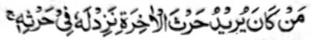
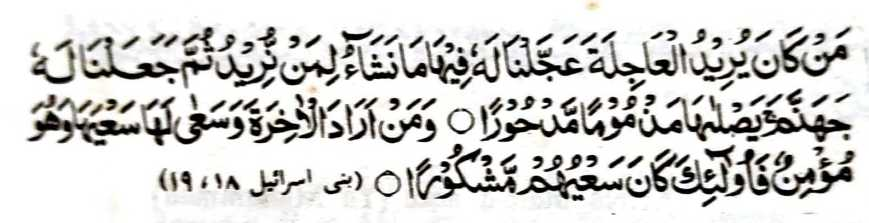
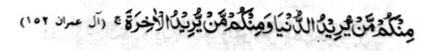
‘Na sa tao a kabaya iyan so ragonan sa Akhirat na pagoman-omanan Nami so ragonan niyan.’
"Saden so aya betad iyan na kabaya iyan so maga-an, na nggaga-anan Nami ron si-i (sa donya) so khabaya-an Nami si-i ko tao a kabaya Ami: Oriyan niyan na isenggay Ami a rek iyan so Naraka Jahannam, a phakasoledon. a kapapa-awingan, a mibobowang. Na saden sa kabaya iyan so Akhirat, go panamaran niyan nggalebek so penggalebeken rekaniyan (a Akhirat), a sekaniyan na mapaparatiyaya, na siran man na miyabaloy so galebek iran a tatarima-an.' [Surah Bani Israel: 18-19]
"...Na aden a ped rekano a tao a kabaya iyan so donya go aden a ped rekano a tao a kabaya iyan so Akhirat...” [Surah Aali ‘Imran: 152]
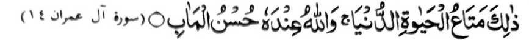
‘...Giyoto man so matag sagad a kapipiya ginawa ko kaoyag-oyag sa donya, na so Allah na ron so mapiya a khandodan’ [Surah Aali ‘Imran: 14]
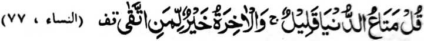
"...Na tharo-a ngka (Ya Muhammad) a so gona ko donya na maito, na so Akhirat-i tomo a bagi-an o tao a miyananggila..." [Surah An-Nisa’:77]
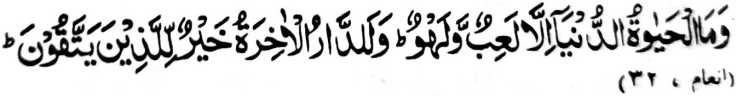
"Na da ko kaoyag-oyag sa donya inonta na matag katembangan go kabimbanan, na matatangked a so inged a Maori-i taralebi a mapiya, ko siran a khipanananggila...’ [Surah Al-An’am:32]
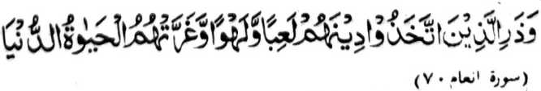
'Na ganati ngka so siran a biyaloy ran so Agama iran a katembangan agokabimbanan, go miyalimpang siran o kaoyag-oyaq ko donya..." [Surah Al-An’am:70]
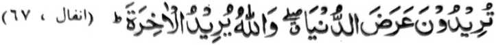
"....Khababaya-an niyo so parahiyasan ko donya, na so Allah na kabaya Iyan (a mambagi-an niyo) so Akhirat..." [Surah Al-Anfal:67]
"...Ino kano khaso-at ko kaoyag-oyag ko donya a di so Akhirat? Na da ko parahiyasan ko kaoyag-oyag ko donya, ko kiphapantagen niyan ko Akhirat inonta na miyakaito-ito.” [Surah At-Taubah:38]
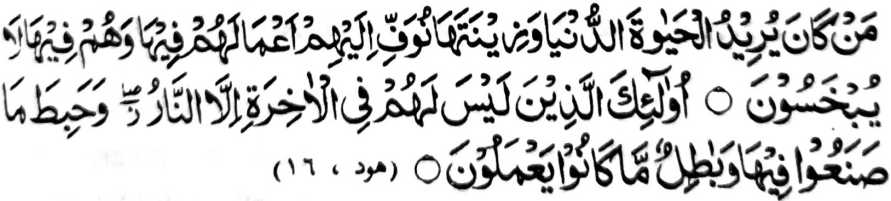
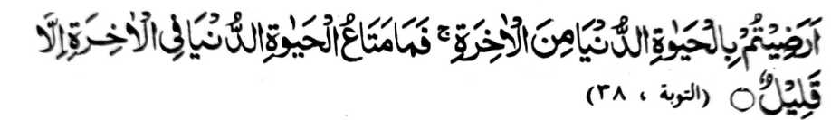
"Saden so kabaya iyan so kaoyag-oyag ko donya, go so parahiyasan non, no ithoman Nami kiran sa tarotop so (bolas o) manga galebek iron (sa donya), a siran da a makorang kiran non ro-o (sa donya). Siran man so da a bagi-an niran ko Akkirat a rowar ko Apoy. Na miya-ilang so pinggalebek iran ro-o (saAkhirat), go miyalak-lak so pinggalebek iran.’ [Surah Hood: 15-16]
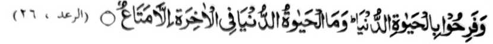
"...Na miyababaya siran sabay ko kaoyag-oyag ko donya, a da ko kaoyag-oyag ko donya ko kiphapantagen niyan ko Akhirat inonta na matag sagad a kapipiya ginawa." [Surah Ar-Ra’d:26]
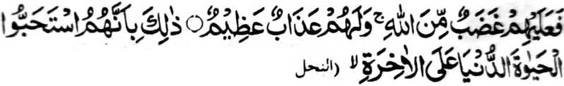
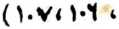
"...Na si-i kiran so rarangit a pho-on ko Allah, go aden a bagi-an niran a siksa a lebi a mala. Giyoto man na sabap sa mata-an a siran na miyatomo iran so kaoyag-oyag ko donya a di so Akhirat..." [Surah An-Nahl:106-107]
Madakel den a manga ped a Ayaat a Piyakapagabay ran angka-iya kaoyag-oyag sa donya ago so Akhirat. Di aken kha-aloy langon, ogaid na so bo so saba-ad kiran-i inaloy aken a manga ibarat. Aya katantowan niyan, na aya khakowa a thoma sangka-iya a manga Ayaat na so siran a miyatomo iran angka-iya donya a di so Akhirat na siran-i phangalalapis ko oriyan niyan. O di ngka mapakapethimbang angkanan a dowa [inged] na aya tomo-a ngka na so Akhirat, sa panamari ngka so manga sarat iyan [ko kiyatomo-a ngka-on]. Tiyarima aken a giyangka-iya donya ago so manga sarat o kapaginetao si-i na di mipezomala a manga kailangan, ogaid na tanodi ngka a da-a tao a aden a ongangen niyan a ba baden oontod sa diyamban apiya miyakapasad [modo].
Opama ka phiya-piya-i tano milay so Shari’ah, na khatarima tano a piyakazenggaya iyan so patot a darepa o manga galebek tano sa donya ago so galebek tano ko Agama tano. Inisogo reketano a kaosara tano ko saba-ad ko masa tano ko manga Sambayang ago pangeni, na so ika dowa ba-ad ko oras tano na si-i ko manga galebek tano sa donya melagid o anda tano pagosara ko kadedekha o di na kapangawiyagan. Si-i sangka-iya a antangan, na mapakapethimbang tano angkto a dowa [galebek ko Agama ago galebek ko donya], sa khapakay a minggolalan tano so atas tanggongan tano ko Agama tano ago so atas tanggongan tano ko kapangawiyagan. Sa opama ka langon tano osara so ginawa tano ko manga paliyogat o donya, na da tano makapaginontolan ago miyakandarainon tano. Aya tanda o kaontol tano na mapakathimbang tano angkanan a dowa, ma-ana so manga paliyogat angka-iya a kaoya-goyag ago so paliyogat o Akhirat, ka an tano langon katalakepi, sabap sa so Islam na di niyan kabaya so katawaranga ko donya. Giya-i mapemama-ana angka-iya a Ayaat:
"...Kodenan nami, begi kami Ngka si-i sa donya sa mapiya go sa Akhirat sa mapiya, go lidasen kami Ngka ko siksa ko Apoy [ko Naraka]." [Surah Al-Baqarah:201]
Si-i sangka-iya a Pinto, na aya antap aken na so ka-aloya ko si-i ko manga katharo o Nabi (Sallallaho Alaihi Wasallam) pantag ko galebek a Tabligh. Go giya ngkanan a pito a miya-aloy aken na kiyatangka-an den ko titho a miyamaratiyaya, so peman so da pamaratiyaya na so Allah na pitharo Iyan:
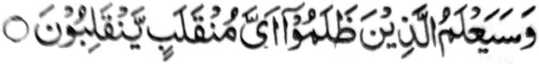
"...Na katokawan den o siran a manga salimbot o antona-a darepa a khandodan i khandodan niran.’ [Surah Ash-Shu’ara:227]
Saba-ad ko manga katharo o Nabi (Sallallaho ‘Alaihi Wasallam) a mitotoro iran a aden a masa a khatalingoma a phangonotan den o omani isa so baya a ginawa niyan ago so manga bodiyok, go da den a phamakineg ko manga ‘enda-owan o Agama o di na so manga Sogoan o Allah. Sangkoto a masa, na inipando o Nabi (Sallallaho ‘Alaihi Wasallam) a kasiyapa tano ko manga ginawa tano go so kasimba-a tano ko Allah, a di sa kapephangosiyati tano ko manga tao. Ogaid na so manga barasimba ko manga pagetao na pitharo iran a da pen makatalingoma angkanan a masa; giyoto-i sabap a panama-namari niyo a kathagompiya o [paratiyaya o] manga ginawa niyo ago [panamari niyo] so kapephamando-i niyo ko manga ped iyo, ko ona-an pen o da kapaka-oma angkanan a masa. Pananggila-an tano so manga pa-awing a miya-aloy o Nabi (Sallallaho ‘Alaihi Wasallam) sa paganay sabap sa giyanan-i manga pinto a pekhapo-onan ko kakhabinasa o manga ginawa tano ago so kaphaginged. So Nabi (Sallallaho Alaihi Wasallam) na piyagitong iyan so manga pa-awing a kiyasabapan sa kiyadarodos tano.